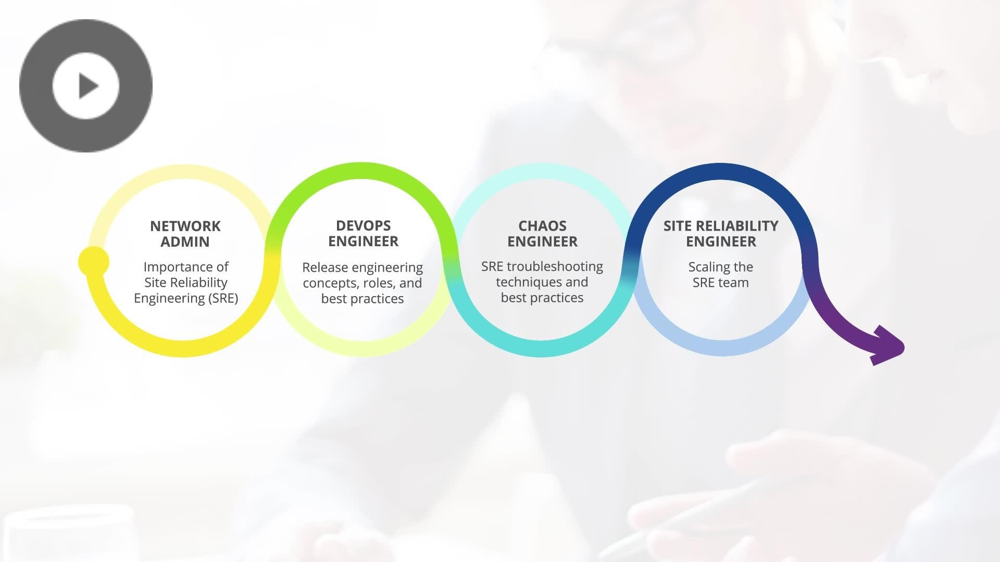
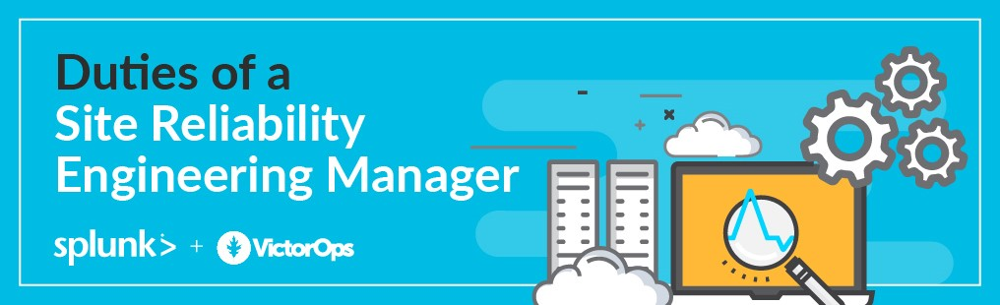
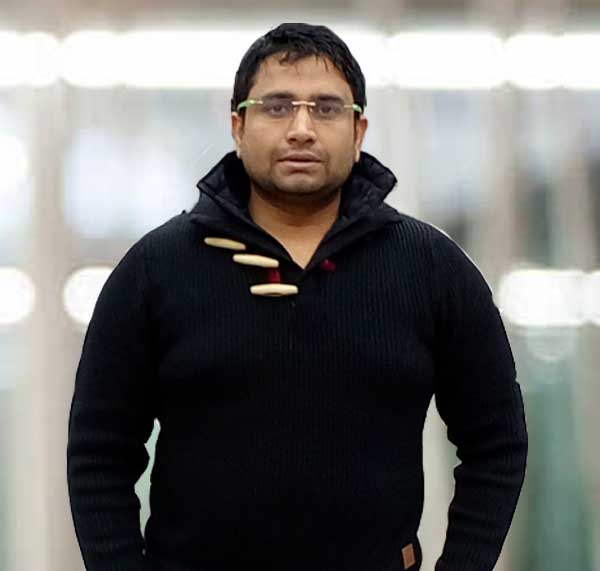

- Our SRE course will guide you through all of the concepts, principles, and approaches to service management, as well as the fundamentals to advanced topics of site reliability engineering. You'll learn about real-world examples and use cases of how businesses are implementing SRE to ensure that their services are as reliable as possible.
- Our SRE course will guide you through all of the concepts, principles, and approaches to service management, as well as the fundamentals to advanced topics of site reliability engineering. You'll learn how firms are adopting the SRE strategy to ensure that their services are as reliable as they need to be, using real-world examples and use cases. What technical and professional skills do SREs need to embed themselves inside development teams, as well as what cultural and psychological factors go into forming a competent SRE team that drives effective implementation?
- DevOpsCertification.co provided us with our SRE programme and certification.
- The SRE training will be conducted by qualified trainers who have a minimum of 15 years of industry experience and have trained over 5000 people.
About
SRE Certified Professional (SRECP)
DevOpsSchool's Site Reliability Engineering Certified Professional (SRECP) certification course will teach you the principles and methods that enable a business to scale essential services reliably and cheaply. SRE is an operations process that focuses on accumulating software engineering and automation solutions in order to ensure that continually delivered applications work efficiently and reliably. Our SRECP course highlights the evolution of SRE in the modern software engineering process and its future direction, and equips learners with the methods, practises, and tools they'll need to engage employees across the organisation in reliability and stability, as evidenced by real-world scenarios and case studies.
This course provides an overview of the principles and methods that enable an organisation to scale key services reliably and economically. Site Reliability Engineering is a method of operations that uses software engineering and automation to ensure that continually delivered applications work smoothly and reliably. The Site Reliability Engineering course highlights the evolution of SRE in the DevOps field and its future direction, as well as providing participants with the practises, methods, and tools needed to engage people from all levels of the organisation in reliability and stability, as evidenced by real-life scenarios and case studies. Participants will have real takeaways to use when they return to the office after completing the SRE programme, such as understanding, defining, and tracking Service Level Objectives (SLOs). The Site Reliability Engineering course was curated to spread knowledge about the key principles and practises necessary for starting SRE adoption by capturing key SRE sources, engaging with thought-leaders in the SRE space, and working with organisations embracing SRE to extract real-life best practises.

Key Features:
- Accredited Trainers with Industry Expertise.
- Live instructor-led training in an online learning session
Learning Outcome:
- How to put Site Reliability Techniques into Practice.
- Best practises in SRE
- Techniques and tools for SRE.
- How to cut costs while increasing reliability.
- How to design and construct sophisticated apps.
- Case Studies in Real-Time
Courses
What role will DevOpsSchool play in SRE Certification and Courses?
DevOpsSchool's Site Reliability Engineering Certified Professional (SRECP) certification course will teach you the principles and methods that enable a business to scale essential services reliably and cheaply. SRE is an operations process that focuses on accumulating software engineering and automation solutions in order to ensure that continually delivered applications work efficiently and reliably. Our SRECP course focuses on the evolution of SRE in the modern software engineering process, as well as its future orientation, and equips students with the methods, processes, and tools they'll need to engage employees across the organisation.
Duration |
Training Mode |
Projects/Assignments |
|---|---|---|
72 hours |
Online/Classroom/Corporate |
01 |
Course Price at
₹ 49,999/-
[Fixed - No Negotiations]
What is
What is Site Reliability Engineering?
SRE stands for site reliability engineering, and it's a software engineering approach to IT operations. To manage systems, address problems, and automate operational duties, SRE teams use software. SRE delegated responsibilities previously performed by operations teams (typically manually) to engineers or operations teams, who employ software and automation to address problems and manage production systems. When it comes to building scalable and highly reliable software systems, SRE is a beneficial practise. It allows you to administer huge systems using code, which is more scalable and long-term for sysadmins handling tens of thousands or even millions of machines. Ben Treynor Sloss, a member of the Google engineering team, is credited with inventing the notion of site reliability engineering. SRE assists teams in striking a balance between releasing new features and ensuring their reliability for users. The SRE paradigm has two key components: standardisation and automation. Engineers in charge of site dependability should continually be searching for methods to improve and automate operational chores.
SRE helps to increase a system's reliability now while also enhancing it as it evolves over time in this way. It helps companies transition from a traditional IT operations methodology to a cloud-native approach.
Role of
What is the role of a site reliability engineer?

A site reliability engineer is a one-of-a-kind position that necessitates experience as a software developer with additional operations experience, or as a sysadmin or in an IT operations function with software development abilities.
SRE teams are in charge of code deployment, configuration, and monitoring, as well as service availability, latency, change management, emergency response, and capacity management.
By using service-level agreements (SLAs) to define the required dependability of the system through service-level indicators (SLI) and service-level objectives, site reliability engineering assists teams in determining what new features can be released and when (SLO).
An SLI is a standardised metric for assessing particular components of a service's quality. Request latency, availability, error rate, and system throughput are all important SLIs. The goal value or range for a particular service level based on the SLI is used to create a SLO.
Based on the agreed-upon allowable downtime, a SLO for the needed system reliability is subsequently determined. An error budget, or the maximum permissible threshold for errors and outages, is the term used to describe this level of downtime.
SRE does not demand 100 percent reliability; failure is expected and accepted.
When a new feature is released, the development team can "spent" the error budget. The development team can use the SLO and error budget to decide if a product or service can launch based on the available error budget.
If a service is operating within its error budget, the development team can launch whenever they want; however, if the system is currently experiencing too many mistakes or is down for longer than the error budget permits, no new launches can be made until the errors are under control. To show reliability, the development team does automated operations tests. Engineers that work on site reliability spend their time between operations and project work. A site reliability engineer can only spend up to 50% of their time on operations, according to Google's SRE best practises, which should be monitored to ensure they don't go over.
The remaining time should be dedicated to development chores such as adding new features, growing the system, and automating processes.
Instead of the site reliability engineer spending too much time on the operations of an application or service, excess operational work and badly performing services can be redirected back to the dev team to run.
The role of the site reliability engineer includes a significant amount of automation. They will automate a remedy if they are dealing with a problem on a regular basis. This also ensures that operations work does not exceed half of their total burden.
An important component of SRE is maintaining a balance between operations and development effort.
Benefits
Benefits of Site Reliability Engineering (SRE)
- Provides visibility into the health of the service- Site reliability engineers have the best understanding of how everything in the system is connected. They understand how to manage metrics, logs, and traces across diverse services. And, if an incident occurs, the observability is already in place, allowing on-call responders to quickly obtain context.
- It acts as a link between developers and operations- Site reliability engineers bridge the gap between developers and Ops. They are equally accountable for creating a reliable, fast CI/CD pipeline. SRE can highlight areas for improvement in the release pipeline. It can also establish guidelines for on-call availability and incident response that encourage everyone to take responsibility.
- The team is relocated to a contemporary NOC- You need a mechanism for responding to application and IT infrastructure warnings. This was usually done through a centralized command Centre – the network operations Centre. SRE is moving toward a modern NOC where warnings are sent directly to the person responsible for resolving the relevant problem.
- Organizing on-call structures and alerting workflows- Site reliability engineers will know the best way to build an on-call process and how to optimize the system for alerts. Every tech stack and organizational structure will differ, so it's important to take a step back and think objectively about the best approach. SREs can help objectively determine the best ways to route alerts through systems.
- Concerns about manufacturing should be factored into the product strategy- Site reliability engineers have the most visibility into what's wrong with production environments. It's their job to create visibility into service health to improve incident response. But it's also important to point out flaws that need to be fixed and prioritised in a team's product roadmap.
Important
Why is Site Reliability Engineering Important?
SRE complements DevOps by measuring and attaining application and service reliability on production and DevOps infrastructure in a specified manner using error budgets, team relationships forged by an error budget, Ops-as-code, and the usage of reliability to manage deployments. The following goals are vital to DevOps engineering, according to SRE:
- Ensure that applications and services are available.
- Ascertain that the error rate and latency comply with Service Level Agreements (SLAs).
- Large-scale systems can be enabled while risk is kept under control.
- Automation and policies can help you save money on operations.
- Developers and SREs' skills should be improved.
How Our SRECP course would help?
Team
Our Team
200+ years of industry experience bringing in core strengths and industry network

Rajesh Kumar
DevOps Princial Architect & Co-founder, Cotocus.
Capt. Augustine Joseph
CEO, JetexeShubhanshu Srivastava
Co-Founder at GoScale TechnologiesSandeep Aggarwal
Co-Founder at GoScale TechnologiesF.A.Q
Frequently Asked Questions
-
What are the main job responsibilities of an SRE expert?
An SRE expert's primary tasks include:
- Stakeholders, BAs, and PMs are gathered to gather project requirements.
- Creating high-level diagrams of the infrastructure, tools, and processes that will be required
- Conducting a thorough examination of potential hazards and countermeasures
- Calculating the cost of probable disruptions and making contingency plans
- Monitoring and assessing the performance of manufacturing systems
- Across the organization, preparing input for infrastructure, tools, and workflow upgrades.
- To reduce the number of errors and incidents, teach the Dev and Ops (or DevOps) teams to follow the rules and practices.
-
Skills in Site Reliability Engineering:
Technical skills:
- Analyze the business
- Teamwork
- Problem-solving
- Under duress, excellent performance
- Excellent written and verbal communication abilities
- Fluency in technical language is required since SRE professionals must be able to propose their ideas to project stakeholders in order to gain their approval and funding for the project or upgrade.
Non-technical skills:
- Knowledge of version control in depth
- Expertise in the capabilities of the Linux operating system
- DevOps concepts and recommended practices are well-understood.
- Expertise in CI/CD implementation
- Troubleshooting expertise with issues
-
DevOps vs. SRE
DevOps is a culture, automation, and platform design strategy aimed at increasing business value and responsiveness by delivering high-quality services quickly. SRE might be regarded a DevOps implementation.
SRE is all about team culture and relationships, just as DevOps. Both SRE and DevOps aim to reduce the time it takes to offer services by bridging the gap between development and operations teams.
Both DevOps and SRE approaches can result in shorter application development life cycles, increased service quality and dependability, and lower IT time per application built.
SRE is unique in that it relies on site reliability engineers with an operations background who are part of the development team to eliminate communication and workflow issues.
By necessitating an overlap in tasks, the site reliability engineer role itself integrates the skillsets of development and operations teams.
SRE can assist DevOps teams whose developers are overburdened with operations responsibilities and require someone with more specific ops knowledge.
DevOps focuses on pushing code and new features through the development pipeline quickly, whereas SRE focuses on balancing site reliability with new feature creation.
DevOps approaches rely on modern application platforms based on container technologies, Kubernetes, and microservices to deliver safe and innovative software services.
-
What is an SRE strategy?
Site Reliability Engineering (SRE) is an approach to operations that uses software engineering and automation solutions to ensure that continually provided applications work efficiently and reliably.
-
What is SRE's purpose?
SRE (Site Reliability Engineering) is a practice in which software development skills and mentality are applied to IT operations. SRE's mission is to increase the stability of large-scale systems by automating and delivering continuous integration and delivery.
-
Is SRE a process or a method?
Site reliability engineering (SRE) is an approach for ensuring that cloud-enabled infrastructure, solutions, and services run continuously. Engineering or development responsibilities are frequently combined with IT operations tasks in an SRE job.
-
Is it possible for me to attend a Demo Session?
We limit the amount of people who can attend our live sessions to ensure that they are of high quality. As a result, without confirmation of enrollment, a live session demo is not available. However, if you want to familiarise yourself with our training methodology and procedure, as well as the teaching style of our instructors, you can request pre-recorded Training videos prior to attending a live session.
-
Will I be able to work on a project?
Yes, after completing the programme, participants will receive one real-time scenario-based project in which they may apply what they've learned and gain real-world industrial setup, skills, and practical knowledge that will help them become industry-ready.
-
Who are the instructors in charge of the training?
All of our instructors, trainers, and faculty members are highly trained industry specialists with at least 10-15 years of relevant experience in various areas such as IT, Agile, SCM, B&R, and DevOps training, consulting, and mentoring. Before they were onboarded to lead our sessions, they had to go through our selection procedure, which included profile screening, technical evaluation, and a training demo.
-
Do you aid in job placement?
No. However, we can assist you in preparing for interviews and preparing a résumé. Because there is a high demand for DevOps professionals, we assist our participants in preparing for it by allowing them to work on real-world projects and providing notifications through our "JOB updates" page and "Forum updates," where we post JOB requirements that we receive via emails/phone calls from various companies looking to hire trained professionals.
-
What system requirements are there for this course?
Windows/Mac/Linux PC with minimum 2GB RAM and 20 GB HDD storage with Windows/CentOS/Redhat/Ubuntu/Fedora are required.
-
What method will I use to carry out the Practicals?
Payment options are-
- Paytm/Google Pay/Phone pe
- All major banks accept NEFT or IMPS.
- Card (debit/credit)
- PayPal and Xoom (For USD Payments)
- Payment is made through our website's payment channel.
-
What if I have more questions?
Please email to contact@DevopsSchool.com
-
What if I'm unable to attend any of the classes?
At DevOpsSchool, you will never miss a lecture. There are two possibilities: Through our Learning management system, you can watch the class presentation, notes, and recordings that are available for online viewing 24 hours a day, seven days a week (LMS). You have three months to make up the missed session in any other live batch or the next batch within 3 months. Please note that our participants will have lifetime access to the learning materials (including class recordings, presentations, notes, step-by-step guides, and so on).
-
Is there any kind of classroom instruction available?
Yes, in Bangalore, Hyderabad, Chennai, and Delhi, classroom instruction is provided. Aside from these cities, classroom sessions are feasible if there are at least 6 participants in that city.
-
Where will the training be held?
The training's location is determined by the cities. Locations can be found on this page:- Contact
-
What is the status of virtual led online training?
Our virtual meetings are held on the GoToMeeting platform.
-
Are there any training certificates available?
DevOpsSchool offers the industry-recognized "DevOps Certified Professional (DCP)" certification, which is accredited by DevOpsCertificaiton.co and has a high value. Participants will be given a certificate based on the projects, assignments, and evaluation tests they complete during and after the course.
-
What if you don't want to keep taking the class for personal reasons?
If you decide not to attend the session, we will not be able to reimburse your money. However, if you wish to cease for a legitimate reason and return after a period of time, please contact our representative or send an email for assistance.
-
Is there any discount for us?
Our rates are quite reasonable. If the participants are in a group, however, the following reductions may be available based on discussions with representatives. Two to Three students – 10% Flat discount Four to Six Student – 15% Flat discount Seven & more – 25% Flat Discount
-
Why should we put our faith in DevOpsSchool when it comes to online training?
You may learn more about us by visiting our website, following us on Twitter, Facebook, and LinkedIn, and making your own decision. You can also send us an email to learn more about us. We'll call you back to discuss why you should choose DevOpsSchool for your online training.
-
How do I get a receipt for my fees?
If the transaction is completed using the website's payment channel, the participant will automatically get an invoice via email. Rest of the alternatives include sending an email or contacting our agent for an invoice.
Refund Policy
If you are contacting us, it suggests you have a genuine need for this training; but, if the training does not meet your expectations, please let us know. You can discuss your concerns with the trainer and try to resolve them. Once the training is confirmed, there are no refunds.

Kshitiij Gupta
Ceo & Founder
Proin iaculis purus consequat sem cure digni ssim donec porttitora entum suscipit rhoncus. Accusantium quam, ultricies eget id, aliquam eget nibh et. Maecen aliquam, risus at semper.

Abhinav Gupta, Pune
Designer
The training was very useful and interactive. Rajesh helped develop the confidence of all.

Indrayani, India
Store Owner
Rajesh is very good trainer. Rajesh was able to resolve our queries and question effectively. We really liked the hands-on examples covered during this training program.

Sumit Kulkarni
Software Engineer
Very well organized training, helped a lot to understand the DevOps concept and detailed related to various tools.Very helpful.

Vinaya
Software Engineer
Thanks Rajesh, Training was good, Appreciate the knowledge you poses and displayed in the training.

{kind=link}
{kind=link}
{kind=link}
{kind=link}
{kind=link}
{kind=link}
{kind=link}